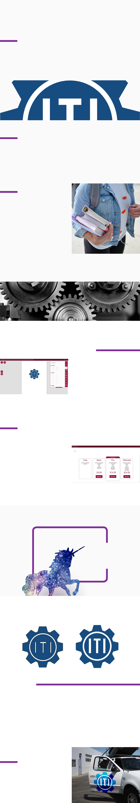

PURPOSE
The objective of this project is to design a
logo that will display the professional and
trustworthy machine-parts retail company.
The design will ultimately be used for all
branding material including signs on delivery
trucks, iers, business cards, packages, web
presence identity, and possibly product marks.
Case Study
Logo for “ITI”
Final “ITI“ logo design
• “ITI” label
• Time limit of 2 hours
REQUIREMENTS
• Simplicity
• Gear symbol(s)
PROBLEM
At my “just-out-of-high-school” development
stage, I had to design a logo. The client
needed the logo right away to attach it to the
letterhead. At the time it did not seem like a
big challenge, so I thought I can do it.
The attempt at creating a logo began with
learning new applications and dening what
were the expectations from my client. He
[the client] already had an idea of what
the logo is going to be, “Three gears with
letters in them.” Sounds simple and
achievable, but the problem with the
execution was that three identical-sized gears
do not t each other in linear pattern and
create an uneven/unbalanced composition.
EXPLORATION
A prototype is a good way to show the client
that going with one gear works. There is a
question of simplicity in modern design, “Does
the composition work without the element?
Yes? Remove.”
I made some sketches and a prototype in the
“nobody-knows” Aphalina Designer application.
Working with the client, we listed main
attributes of the new company’s values
and growth expectations to help aid in
choice of color, shapes and typography to
deliver the message of professional,
trustworthy and mechanical.
DISCOVERY & IDEATION
Because a gear with rounded corners and
a pink-glossy ll would give a sense of a
baby-toy shop; the decision was made to use
sharp shapes and dark blue ll with white
elements to appear professional,
clean and trustworthy.
To simplify the three-gear challenge, we
decided to leave only one. The nal was ready
to be exported 1 hour after the request for a
logo. The program I was working with exported
a PDF only if I subscribe for monthly payment.
I was not ready for paying, and the logo had
to be delivered as soon as possible, so I took a
screen-shot of the logo as a JPG with default
windows snippet tool and that screen-shot was
my delivery of the logo.
SOLUTION
The design work was produced within an hour
and served its purpose of letterhead identity of
a professional, trustworthy mechanical retail
company. The low resolution of the screen-shot
was not noticable on email letterhead.
Everything
is possible
You just got to be a unicorn
CONCLUSION
The project shows the ability to develop a
solution in a fast pace, and work collaboratively
with client’s feedback to provide the best
version of a logo that suits the needs.
It is an accomplishment for a pre-college level
designer that helped develop me as a designer
not only in technical way but in creation of
an essential personal connection with my
client and his brand.
Photo from unsplash by Element5digital
Final design of the “ITI” logo on a delivery truck mock up
Screen-shot of development in Aphalina Designer
Screen-shot of a problem in Aphalina Designer
Final “ITI“ logo designScreen-shot delivery of “ITI“ logo design
Later in the semester I discovered Creative Cloud
and transformed this logo into an SVG vector
le, so it looks sharp and can be scaled to any
size. The logo design project is successfull since
Industrial Technology Inc. continues to proudly
wear it since May 2017.